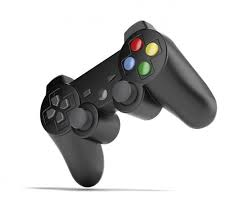

Jogo Eletronico
Um jogo eletrônico (português brasileiro) ou jogo eletrónico (português europeu), também chamado videojogo ou videogame, é um jogo no qual o jogador interage através de periféricos conectados ao aparelho, como controles (joysticks) e/ou teclado com imagens enviadas a uma televisão ou um monitor, ou seja, aquele que usa tecnologia de computador. O termo inglês video game, ganhou a forma aglutinada no Brasil (como videogame), tanto para se referir a videojogos, como para se referir aos consoles onde os jogos se processam.
Os sistemas eletrônicos usados para jogar videojogos são conhecidos como plataformas — como, por exemplo, computadores, arcades, celulares e consoles.
O dispositivo de entrada usado para manipular videojogos é chamado controle e varia de acordo com a plataforma. Por exemplo, um controle pode ser constituído por um direcional e um único botão. Outros podem ter dezenas de botões e mais de um direcional. Muitos jogos de computador podem também ser jogados com teclado ou uma combinação do teclado com o rato/mouse simultaneamente ou até mesmo controles específicos.
Existem inumeros tipos de joystick no mundo. No video abaixo estão alguns exemplos dos joysticks mais utilizados.
Os videogames também podem usar outras maneiras de interagir e prover informação ao jogador. O uso de sons é usado em larga escala desde os primórdios. Outros tipos de resposta, como dispositivos de vibração e sensores de movimento também são bastante utilizados nos videojogos. O avanço tecnológico tem trazido formas cada vez mais intensas de imersão nos jogos através destes periféricos, como o reconhecimento de movimentos e de voz, surgindo assim os jogos em realidade virtual, fruto do desenvolvimento da tecnologia.